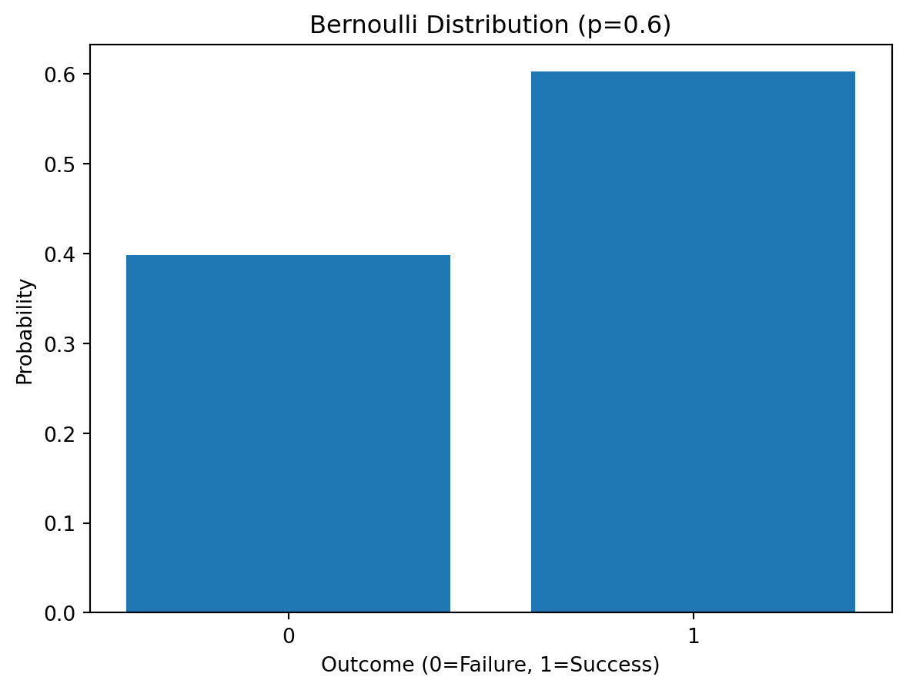
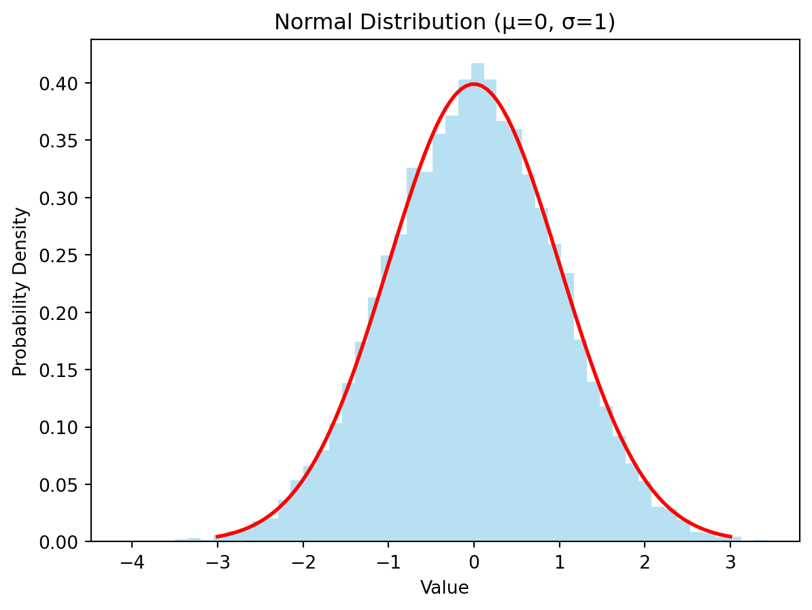

Probability is a branch of mathematics that deals with the likelihood of occurrence of events. It quantifies uncertainty. An event is a particular outcome or a set of outcomes of a random phenomenon. The probability of an event is a number between 0 and 1, inclusive. A probability of 0 indicates that the event is impossible, while a probability of 1 indicates that the event is certain. Probabilities are often expressed as fractions, decimals, or percentages.
For example, if we flip a fair coin, the probability of getting heads is 1/2, or 0.5, or 50%. This means that if we flip the coin many times, we expect heads to appear approximately half the time. The foundation of probability lies in understanding the sample space (all possible outcomes) and the events within that space.
2.0.2 Types of Probability
There are several ways to interpret and calculate probabilities. Three common types are:
Classical Probability: This approach assumes that all outcomes in the sample space are equally likely. The probability of an event is calculated as the ratio of the number of favorable outcomes to the total number of possible outcomes.
For example, the probability of rolling a 3 on a six-sided die is 1/6 because there is one favorable outcome (rolling a 3) out of six possible outcomes (rolling 1, 2, 3, 4, 5, or 6).
Empirical Probability (or Frequentist Probability): This approach is based on observing the frequency of an event in a large number of trials. The probability is estimated as the ratio of the number of times the event occurred to the total number of trials.
import matplotlib.pyplot as pltimport random# Simulate coin tossesnum_tosses =1000heads =sum(random.random() <0.5for _ inrange(num_tosses))tails = num_tosses - heads# Calculate empirical probabilitiesprob_heads = heads / num_tossesprob_tails = tails / num_tosses# Plot resultslabels ='Heads', 'Tails'sizes = [prob_heads, prob_tails]plt.pie(sizes, labels=labels, autopct='%1.1f%%', startangle=90)plt.axis('equal')plt.title('Empirical Probabilities of Coin Tosses')plt.show()print(f"Empirical probability of heads: {prob_heads:.4f}")print(f"Empirical probability of tails: {prob_tails:.4f}")
Empirical probability of heads: 0.4900
Empirical probability of tails: 0.5100
Subjective Probability: This approach relies on an individual’s judgment or belief about the likelihood of an event. It is often used when there is limited data or when events are unique and not easily repeatable. For example, the probability of a particular company’s stock price increasing next week might be based on an analyst’s subjective assessment.
graph LR
A[Probability] --> B(Classical);
A --> C(Empirical);
A --> D(Subjective);
B --> E{Equally Likely Outcomes};
C --> F{Observed Frequency};
D --> G{Expert Judgment/Belief};
2.1 Frequentist vs. Bayesian Approaches
2.1.1 Frequentist Interpretation of Probability
The frequentist interpretation defines probability as the long-run frequency of an event. It’s based on the idea of repeating an experiment many times under identical conditions. The probability of an event is the limit of its relative frequency as the number of trials approaches infinity. Frequentists focus on objective evidence obtained from data. They don’t assign probabilities to hypotheses; instead, they assess hypotheses based on the observed data and the likelihood of observing that data given the hypothesis. Frequentist methods often rely on p-values and confidence intervals to make inferences.
For example, a frequentist would estimate the probability of getting heads when flipping a coin by flipping the coin many times and calculating the proportion of heads obtained. The more flips, the better the estimate of the true probability (assuming a fair coin). There’s no inherent prior belief about the fairness of the coin; the probability is derived solely from the observed data.
2.1.2 Bayesian Interpretation of Probability
The Bayesian interpretation views probability as a degree of belief or uncertainty about an event. This belief is updated as new evidence becomes available. Bayesian methods incorporate prior knowledge or beliefs (prior probabilities) about the event. When new data is observed, Bayes’ theorem is used to update the prior probability, resulting in a posterior probability. This posterior probability reflects the updated belief about the event after considering the new evidence. Bayesian methods allow for quantifying uncertainty in parameters and predictions.
2.1.3 Key Differences and When to Use Each Approach
Feature
Frequentist
Bayesian
Probability
Long-run frequency
Degree of belief
Prior Knowledge
Not incorporated
Explicitly incorporated (prior probability)
Inference
Based on data frequency; p-values, confidence intervals
Based on updating prior beliefs with data; posterior probability
Parameters
Treated as fixed, unknown values
Treated as random variables with probability distributions
Uncertainty
Measured by confidence intervals
Measured by probability distributions
When to use which approach:
Frequentist: Suitable when you have a large amount of data and the goal is to make objective inferences based on the data alone. Useful for hypothesis testing, estimating population parameters, and establishing confidence intervals.
Bayesian: Suitable when you have limited data, prior knowledge is available, or the goal is to quantify uncertainty about parameters or predictions. Useful for modeling complex systems, incorporating expert opinion, and making predictions with uncertainty quantification.
2.1.4 Illustrative Examples
Let’s consider a simple example of testing whether a coin is fair.
Frequentist approach:
We flip the coin 10 times and observe 7 heads. A frequentist might conduct a hypothesis test to determine if the proportion of heads is significantly different from 0.5 (the expected proportion for a fair coin).
Bayesian approach:
We start with a prior belief about the probability of heads (e.g., a uniform prior between 0 and 1, reflecting no strong prior belief). We then update this prior using Bayes’ theorem after observing 7 heads in 10 flips to obtain a posterior probability distribution for the probability of heads. This posterior distribution will reflect our updated belief, taking into account both the prior belief and the observed data.
import numpy as npimport matplotlib.pyplot as pltimport scipy.stats as stats# Bayesian approach example (simplified)# Prior (uniform distribution)prior = stats.uniform(0, 1)# Likelihood (Binomial distribution)likelihood = stats.binom(10, 0.7) # Observed 7 heads in 10 tosses# Posterior (proportional to prior * likelihood)# Numerical integration is needed to get exact posterior# We'll use sampling for approximation here.num_samples =10000samples = prior.rvs(num_samples)posterior_probs = likelihood.pmf(7) * stats.beta(8, 4).pdf(samples)posterior_probs = posterior_probs / np.sum(posterior_probs) #Normalize to get probability distributionplt.hist(samples[posterior_probs >0], weights=posterior_probs[posterior_probs >0], bins=20)plt.title('Posterior Distribution for Probability of Heads')plt.xlabel('Probability of Heads')plt.ylabel('Density')plt.show()
This Python code demonstrates a simplified Bayesian approach using sampling to approximate the posterior distribution. A more accurate approach would involve numerical integration or Markov Chain Monte Carlo (MCMC) methods, which are beyond the scope of this introductory section. The plot shows the posterior distribution of the probability of heads after observing the data. We can see that the posterior distribution is shifted towards higher probabilities of heads compared to the uniform prior, reflecting the observed data.
2.2 Probability Axioms and Rules
2.2.1 Kolmogorov’s Axioms
Andrey Kolmogorov formalized the foundations of probability theory with his three axioms:
Non-negativity: The probability of any event A is non-negative: \(P(A) \geq 0\).
Normalization: The probability of the sample space (the set of all possible outcomes) is 1: \(P(\Omega) = 1\).
Additivity: For any countable sequence of mutually exclusive events \(A_1, A_2, A_3,...\), the probability of their union is the sum of their individual probabilities: \(P(\cup_i A_i) = \sum_i P(A_i)\). Mutually exclusive means that no two events can occur simultaneously.
These axioms provide a rigorous mathematical framework for defining and manipulating probabilities. 3. Additivity: For any countable sequence of mutually exclusive events A₁, A₂, A₃,…, the probability of their union is the sum of their individual probabilities: P(∪ᵢAᵢ) = ΣᵢP(Aᵢ). Mutually exclusive means that no two events can occur simultaneously. 3. Additivity: For any countable sequence of mutually exclusive events \(A_1, A_2, A_3,...\), the probability of their union is the sum of their individual probabilities: \(P(\cup_i A_i) = \sum_i P(A_i)\). Mutually exclusive means that no two events can occur simultaneously.
These axioms provide a rigorous mathematical framework for defining and manipulating probabilities.
2.2.2 Addition Rule
The addition rule describes the probability of the union of two events.
For any two events A and B:\(P(A \cup B) = P(A) + P(B) - P(A \cap B)\). The term \(P(A \cap B)\) (the probability of both A and B occurring) is subtracted to avoid double-counting the overlap between A and B.
If A and B are mutually exclusive (disjoint), then \(P(A \cap B) = 0\), simplifying the addition rule to: \(P(A \cup B) = P(A) + P(B)\).
If A and B are mutually exclusive (disjoint), then \(P(A \cap B) = 0\), simplifying the addition rule to: \(P(A \cup B) = P(A) + P(B)\).
If A and B are mutually exclusive (disjoint), then \(P(A \cap B) = 0\), simplifying the addition rule to: \(P(A \cup B) = P(A) + P(B)\).
2.2.3 Multiplication Rule
The multiplication rule describes the probability of the intersection of two events.
For any two events A and B:\(P(A \cap B) = P(A | B) * P(B) = P(B | A) * P(A)\). This states that the probability of both A and B occurring is equal to the probability of A given B (conditional probability), multiplied by the probability of B. The same holds true if we reverse A and B.
If A and B are independent, meaning that the occurrence of one event doesn’t affect the probability of the other, then \(P(A | B) = P(A)\) and \(P(B | A) = P(B)\). This simplifies the multiplication rule to: \(P(A \cap B) = P(A) * P(B)\).
2.2.4 Conditional Probability
Conditional probability describes the probability of an event occurring given that another event has already occurred.
The conditional probability of event A given event B is denoted as \(P(A | B)\) and calculated as:
\(P(A | B) = \frac{P(A \cap B)}{P(B)}\), provided \(P(B) > 0\). P(A | B) = P(A ∩ B) / P(B), provided P(B) > 0. \(P(A | B) = \frac{P(A \cap B)}{P(B)}\), provided \(P(B) > 0\).
2.2.5 Law of Total Probability
The law of total probability allows us to calculate the probability of an event by considering all possible mutually exclusive and exhaustive ways that the event could occur. Let \(A\) be an event, and let \(B_1, B_2, \dots, B_n\) be a partition of the sample space (meaning they are mutually exclusive and their union is the entire sample space). Then:
\(P(A) = \sum_{i=1}^{n} P(A | B_i) P(B_i)\) This formula breaks down the probability of \(A\) into the probabilities of \(A\) occurring given each of the possible scenarios (\(B_i\)), weighted by the probability of each scenario occurring.
import matplotlib.pyplot as plt#Illustrative Example for Law of Total Probability#Suppose we have two boxes, Box1 and Box2.#Box1 contains 3 red balls and 2 blue balls.#Box2 contains 1 red ball and 4 blue balls.#We randomly choose a box and then randomly draw a ball from that box.#Probabilities:P_Box1 =0.5#Probability of choosing Box1P_Box2 =0.5#Probability of choosing Box2P_Red_given_Box1 =3/5#Probability of drawing a red ball given Box1 was chosenP_Red_given_Box2 =1/5#Probability of drawing a red ball given Box2 was chosen#Using the law of total probability to find the overall probability of drawing a red ball:P_Red = P_Red_given_Box1 * P_Box1 + P_Red_given_Box2 * P_Box2print(f"The overall probability of drawing a red ball is: {P_Red}")#Visualization using a bar chartlabels ='Red from Box1', 'Red from Box2'sizes = [P_Red_given_Box1 * P_Box1, P_Red_given_Box2 * P_Box2]plt.pie(sizes, labels=labels, autopct='%1.1f%%', startangle=90)plt.title('Probabilities of Drawing a Red Ball')plt.axis('equal')plt.show()
The overall probability of drawing a red ball is: 0.4
This code provides a simple illustration of the Law of Total Probability. The chart visually represents the contribution of each scenario to the overall probability. More complex examples would require more sophisticated calculations and might use simulation methods.
2.3 Conditional Probability and Bayes’ Theorem (Preview)
2.3.1 Defining Conditional Probability
Conditional probability quantifies the likelihood of an event occurring given that another event has already happened. We denote the conditional probability of event A occurring given that event B has occurred as \(P(A|B)\), read as “the probability of A given B”. Formally, it’s defined as:
This formula states that the conditional probability of A given B is the ratio of the probability of both A and B occurring to the probability of B occurring. It essentially restricts the sample space to only those outcomes where B has occurred.
2.3.2 Understanding Conditional Probability with Examples
Example 1: Drawing Cards
Consider drawing two cards from a standard deck without replacement. What is the probability that the second card is a King, given that the first card is a Queen?
Let \(A\) be the event that the second card is a King. Let \(B\) be the event that the first card is a Queen.
\(P(A|B)\) is not simply \(4/52\) (there are 4 Kings in a 52-card deck). The fact that the first card was a Queen changes the probability. There are now only 51 cards remaining, and still 4 Kings. Therefore:
\(P(A|B) = 4/51\)
Example 2: Medical Testing
Suppose a test for a disease has a 95% sensitivity (probability of correctly identifying a person with the disease) and a 90% specificity (probability of correctly identifying a person without the disease). If 1% of the population has the disease, what is the probability that a person who tests positive actually has the disease? (This example highlights the importance of considering base rates). This problem requires Bayes’ theorem, which we will introduce shortly.
2.3.3 Introduction to Bayes’ Theorem
Bayes’ theorem provides a mathematical formula for calculating conditional probabilities. It’s a powerful tool for updating beliefs in light of new evidence. It’s derived directly from the definition of conditional probability and the multiplication rule:
\(P(A|B) = \frac{P(B|A) P(A)}{P(B)}\)
where:
\(P(A|B)\) is the posterior probability of A given B. This is what we want to calculate.
\(P(B|A)\) is the likelihood of B given A.
\(P(A)\) is the prior probability of A.
\(P(B)\) is the marginal likelihood of B (often calculated using the law of total probability).
2.3.4 Intuition Behind Bayes’ Theorem
Bayes’ theorem describes how to update our beliefs about an event (\(A\)) when we get new evidence (\(B\)).
Prior Probability (\(P(A)\)): This is our initial belief about the probability of \(A\) before we see any new evidence.
Likelihood (\(P(B|A)\)): This is the probability of observing the evidence \(B\), given that \(A\) is true.
Posterior Probability (\(P(A|B)\)): This is our updated belief about the probability of \(A\)after considering the new evidence \(B\). It combines the prior belief with the new evidence.
Marginal Likelihood (\(P(B)\)): This is the probability of the evidence \(B\), regardless of whether \(A\) is true or false. It acts as a normalization factor.
Bayes’ theorem allows us to formally quantify this updating process, moving from prior belief to a more informed posterior belief based on data. The theorem is stated as:
\(P(A|B) = \frac{P(B|A) P(A)}{P(B)}\)
import matplotlib.pyplot as pltimport numpy as np#Illustrative Example of Bayes' Theorem (Medical Testing)#Prior Probability (Disease Prevalence)prior_prob_disease =0.01# 1%#Likelihood (Test accuracy)sensitivity =0.95#95% sensitivityspecificity =0.90#90% specificity#Let's say a person tests positive: What is the probability they actually have the disease?# Calculate some probabilities (we'll use these for the visualization)prob_pos_given_disease = sensitivityprob_neg_given_no_disease = specificityprob_pos_given_no_disease =1- specificityprob_neg_given_disease =1- sensitivity#Calculate the probability of a positive test result (using the law of total probability)prob_positive_test = (prob_pos_given_disease * prior_prob_disease) + (prob_pos_given_no_disease * (1- prior_prob_disease))#Bayes' Theorem:posterior_prob_disease = (prob_pos_given_disease * prior_prob_disease) / prob_positive_testprint(f"Posterior probability of having the disease given a positive test result: {posterior_prob_disease:.4f}")#Visualization:labels ='Disease', 'No Disease'prior_sizes = [prior_prob_disease, 1- prior_prob_disease]posterior_sizes = [posterior_prob_disease, 1- posterior_prob_disease]fig, axes = plt.subplots(1,2, figsize=(10,5))axes[0].pie(prior_sizes, labels=labels, autopct='%1.1f%%', startangle=90)axes[0].set_title('Prior Probability (Disease Prevalence)')axes[1].pie(posterior_sizes, labels=labels, autopct='%1.1f%%', startangle=90)axes[1].set_title('Posterior Probability (After Positive Test)')plt.show()
Posterior probability of having the disease given a positive test result: 0.0876
The code and chart illustrate how Bayes’ theorem updates our belief about the probability of having a disease after a positive test result. The shift from prior to posterior probability demonstrates the power of incorporating new data to refine our understanding.
2.4 Common Probability Distributions (Preview)
2.4.1 Discrete vs. Continuous Distributions
Probability distributions describe the probability of different outcomes for a random variable. A random variable is a variable whose value is a numerical outcome of a random phenomenon. Distributions are categorized as either discrete or continuous:
Discrete Distributions: The random variable can only take on a finite number of values or a countably infinite number of values. Examples include the number of heads in three coin flips (0, 1, 2, or 3) or the number of cars passing a point on a highway in an hour.
Continuous Distributions: The random variable can take on any value within a given range or interval. Examples include height, weight, temperature, or time.
2.4.2 Bernoulli Distribution
The Bernoulli distribution models the probability of success or failure in a single trial. It’s a discrete distribution with only two possible outcomes:
Success (usually denoted as 1) with probability \(p\)
Failure (usually denoted as 0) with probability \(1-p\)
import numpy as npimport matplotlib.pyplot as pltfrom scipy.stats import bernoulli#Parametersp =0.6#Probability of success#Generate random samplessamples = bernoulli.rvs(p, size=1000)#Plot the distributionplt.hist(samples, bins=[-0.5, 0.5, 1.5], align='mid', rwidth=0.8, density=True)plt.xticks([0,1]) plt.xlabel('Outcome (0=Failure, 1=Success)')plt.ylabel('Probability')plt.title('Bernoulli Distribution (p=0.6)')plt.show()

2.4.3 Binomial Distribution
The binomial distribution models the probability of getting a certain number of successes in a fixed number of independent Bernoulli trials. It’s a discrete distribution.
The probability of getting exactly \(k\) successes in \(n\) trials is given by the probability mass function:
\(p\) is the probability of success in a single trial
\(\binom{n}{k}\) is the binomial coefficient, calculated as \(n! / (k! * (n-k)!)\)
import numpy as npimport matplotlib.pyplot as pltfrom scipy.stats import binom# Parametersn =10# Number of trialsp =0.5# Probability of success# Generate random samplessamples = binom.rvs(n, p, size=10000)# Plot the distributionplt.hist(samples, bins=range(n +2), align='left', rwidth=0.8, density=True)plt.xlabel('Number of Successes')plt.ylabel('Probability')plt.title('Binomial Distribution (n=10, p=0.5)')plt.show()
2.4.4 Normal Distribution
The normal (or Gaussian) distribution is a continuous distribution that’s bell-shaped and symmetrical. It’s characterized by its mean (\(\mu\)) and standard deviation (\(\sigma\)). Many natural phenomena approximately follow a normal distribution.
import numpy as npimport matplotlib.pyplot as pltfrom scipy.stats import norm# Parametersmu =0# Meansigma =1# Standard deviation# Generate random samplessamples = norm.rvs(loc=mu, scale=sigma, size=10000)# Plot the distributionplt.hist(samples, bins=50, density=True, alpha=0.6, color='skyblue')x = np.linspace(mu -3* sigma, mu +3* sigma, 100)plt.plot(x, norm.pdf(x, mu, sigma), color='red', linewidth=2)plt.xlabel('Value')plt.ylabel('Probability Density')plt.title('Normal Distribution (μ=0, σ=1)')plt.show()

2.4.5 Uniform Distribution
The uniform distribution assigns equal probability to all outcomes within a given range. It can be either discrete or continuous.
Continuous Uniform Distribution: The probability density function is constant within the specified interval [a, b].
import numpy as npimport matplotlib.pyplot as pltfrom scipy.stats import uniform# Parametersa =0# Lower boundb =10# Upper bound# Generate random samplessamples = uniform.rvs(loc=a, scale=b, size=10000)# Plot the distributionplt.hist(samples, bins=50, density=True, alpha=0.6, color='skyblue')plt.xlabel('Value')plt.ylabel('Probability Density')plt.title('Uniform Distribution (a=0, b=10)')plt.show()